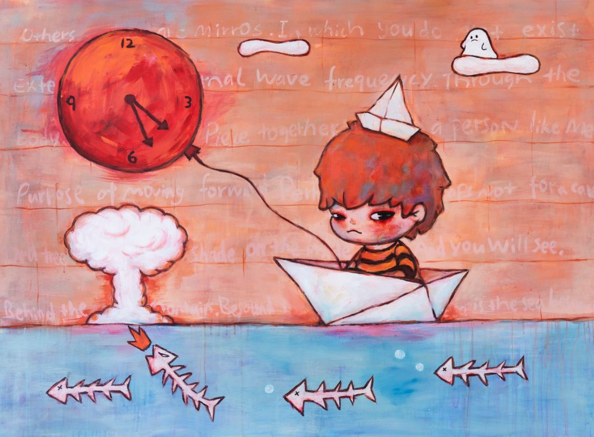

Djo inspires me through his music to get me through the day. When I listen to Djo's music, I get pumped up to get ready and drive to work, to commute to school, and to do work I need to do.

Lang inspires me through his cohesive art toy branding as well as his dark and deep designs that is usually unseen in POP MART toy lines.
Jayden Rono inspires me in my favorite outfits to try for more interesting pieces, whether it is in texture, color, or silhouette.